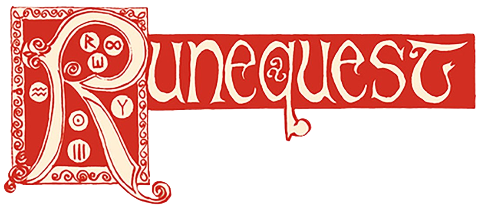
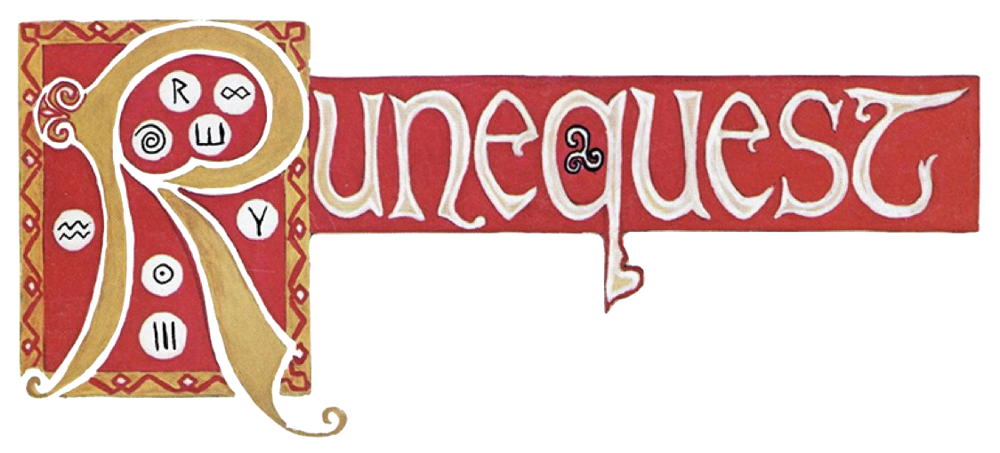
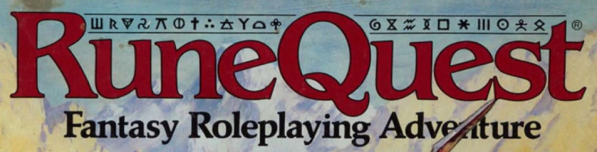
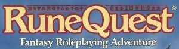
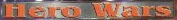
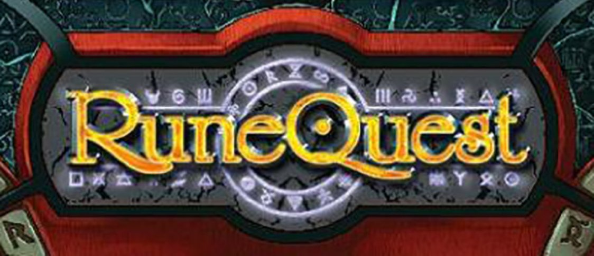
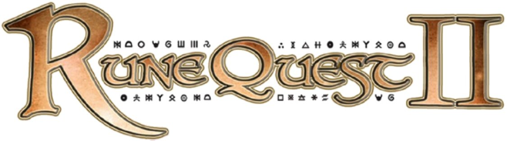
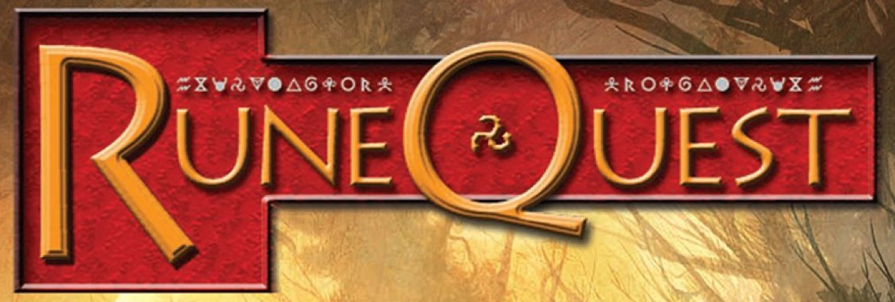
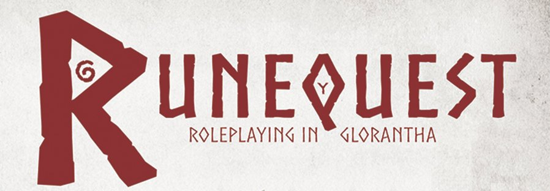
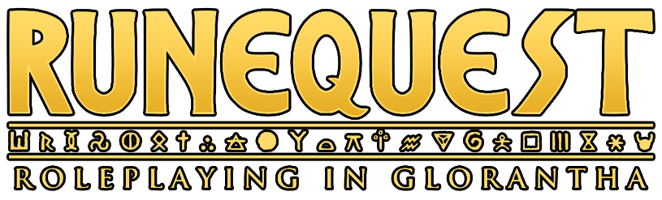

настольно-печатные игры без редакции
- White Bear and Red Moon (1975–1976)
- Nomad Gods (1977)
CHA1001Dragon Pass (1980)AH849Dragon Pass: Game of Gloranthan Warfare (1984)CHA1052Khan of Khans (2016)- Glorantha: The Gods War (2019)

первая редакция RuneQuest (1978)
- RuneQuest by Steve Perrin and Friends (1978)
- SP1 Scenario Pack 1: Balastor's Barracks (1978)
- SP2 Scenario Pack 2: Apple Lane (1978)
- SP3 Source Pack Alpha: Trolls and Trollkin (1978)
- SP4 Source Pack Beta: Creatures of Chaos 1 — Scorpion Men and Broos (1978)
- SP5 Source Pack Gamma: Militia & Mercenaries (1979)
- SP6 Snakepipe Hollow, RuneQuest Scenarios (1979) — жёлтая обложка
- SP6 Snakepipe Hollow, A High Level Scenario Pack (1979?) — тёмно-зелёная обложка без рамки
- SP7 Cults of Prax (1979)
- JG107 Broken Tree Inn (1979)
- JG116 Hellpits of Nightfang (1979)
- JG220 Legendary Duck Tower (1980)
- JG310 City of Lei Tabor (1979)
- JG380 Duck Pond (1980)

вторая редакция RuneQuest от Chaosium (1980)
CHA4001RuneQuest by Steve Perrin and Ray Turney (1980) — первые тиражи в мягком переплётеCHA4001-HRuneQuest by Steve Perrin and Ray Turney (1980) — красный твёрдый переплёт в суперобложке (в зависимости от тиража — цветной, монохромно-коричневой и монохромно-красной)CHA4001-XRuneQuest: Action-Packed Adventures to Master Luck and Death (1980) — коробкаCHA4001-XRuneQuest: Fantastic Adventures with Heroes & Magic! (1982) — коробка потолщеCHA4001-LERuneQuest by Steve Perrin and Ray Turney (2016) — переиздание в красном твёрдом переплёте в суперобложкеGW102107RuneQuest The Fantasy Role-Playing Game (1980) — британское издание коробкиCHA4002Balastor's Barracks (1978)CHA4003Trolls and Trollkin (1978)CHA4004Creatures of Chaos 1 — Scorpion Men and Broos (1978)CHA4005Apple Lane (1978)CHA4006Militia & Mercenaries (1979)CHA4007Snake Pipe Hollow, RuneQuest Adventures in Caverns of Chaos (1981) — название заполучило пробел, а обложка — полноцветную иллюстрациюCHA4008Cults of Prax (1981) — с ярко-красным названием на фоне картыCHA4009Foes: 1200 Monsters of RuneQuest (1980)CHA4010The Gateway Bestiary: Additional Monsters for Runequest (1980)CHA4011Plunder: Runequest Book of Treasure (1980)CHA4012Rune Masters (1980)CHA4013Griffin Mountain: A Complete Wilderness Campaign for RuneQuest (1981) — американская и британская версии отличаются логотипами RuneQuest и качествомCHA4014Cults of Terror: Nine Dangerous Deities for RuneQuest Role-playing (1981)CHA4015-XBorderlands: A Runequest Campaign in Seven Scenarios (1982) — коробкаCHA4016-XTrollpak: Troll Facts, Secrets and Adventures for RuneQuest (1982) — коробкаCHA4017SoloQuest: Three Solo Adventures (1982)CHA4018-XQuestworld: 9 Gateway Adventures for RuneQuest (1982) — коробкаCHA4019SoloQuest 2: Scorpion Hall (1982)CHA4020SoloQuest 3: The Snow King's Bride (1982)CHA4021-XPavis: Threshold to Danger (1983) — коробкаCHA4022-XBig Rubble: The Deadly City (1983) — коробкаCHA4023RuneQuest Companion: History, Stories, and Play-aids (1983)CHA4500King of Sartar (1992; 2007; 2015)CHA4501Wyrms Footprints: Glorantha Legends and Lore (1995) — сборник материалов из пятнадцати выпусков одноимённого фанзина- The Sea Cave (написан в 1980, опубликован в 2016)

третья редакция RuneQuest от Avalon Hill (1984)
Глоранта описана как альтернатива базовому сеттингу фэнтезийной Европы
- RuneQuest: Fantasy Roleplaying Adventure (1987)
- коробки
AH857RuneQuest: Fantasy Roleplaying Adventure. Deluxe Edition (1985)AH8571RuneQuest: Fantasy Roleplaying Adventure. Player's Box (1984)AH8572RuneQuest: Fantasy Roleplaying Adventure. Gamemaster's Box (1984)AH8573RQ1 Monster Coliseum: Arena Combat & Chariot Racing (1985)AH8574RQ2 Adventurer Sheets: Human (1985) — пока что у меня даже два экземпляра, надо будет избавлятьсяAH8575RQ3 Adventurer Sheets: Nonhuman (1985) — аналогично два, надо точно продавать, это редкость вообще-тоAH8576RQ4 Vikings: Nordic Roleplaying for RuneQuest (1985)AH8577RQ5 Gods of Glorantha: 60 Religions for RuneQuest (1985)AH8578RQ6 Griffin Island: A Wilderness Campaign for RuneQuest (1986)AH8579RuneQuest: Fantasy Roleplaying Adventure. Standard Edition (1986)AH8584RQ7 Land of Ninja: Samurai Roleplaying in Feudal Japan (1987)AH8585RQ8 Glorantha: Genertela, Crucible of the Hero Wars (1988)AH8586RQ9 Trollpak: Troll Facts, Secrets and Adventures (1988)AH8587RQ10 Troll Gods: The Deities of Darkness (1989)AH8588RQ11 Elder Secrets of Glorantha (1989)
- мягкий переплёт
AH8570RuneQuest: Fantasy Roleplaying Adventure. Deluxe Edition (1993)AH85711Gloranthan Bestiary: Creatures From Around the World (1988)AH85712Apple Lane: Save the Hamlet from Scurrilous Scoundrels (1987)AH85713Snake Pipe Hollow: Venture into the Heart of Chaos (1987)AH85714RuneQuest Cities: Create and Explore Your Own Fantasy Communities (1988)AH85715Into the Troll Realms: Troll Adventures and Encounters for RuneQuest (1988)AH85716The Haunted Ruins: A Complete Troll Tribe for Runequest (1989)AH85717Daughters of Darkness and the Chronicles of Santon (1990)AH8589Eldarad: The Lost City (1990)AH85906Sun County: Runequest Adventures in the Lands of the Sun (1992)AH8591River of Cradles: Lands and Peoples of Pavis and the Zola Pel Valley (1992)AH8592Dorastor: Land of Doom (1993)AH8593061Strangers in Prax (1994)AH8594Shadows on the Borderland (1993)AH8595Lords of Terror: The Cults of Dorastor (1994)AH8601Special RuneQuest Package (1995) — содержит AH8579, AH8594, AH85906, AH8593061, AH8595 и AH85712

третья редакция RuneQuest от Games Workshop (1987)
GW4616RuneQuest Fantasy Roleplaying Adventure, Third Edition (1987) — репринт коробки в твёрдом переплётеGW4642RuneQuest Fantasy Roleplaying Adventure, Third Edition (1987) — репринт коробки в мягком переплётеGW4628Advanced RuneQuest, Third Edition (1987)GW4667RuneQuest Monsters, Third Edition (1987)GW4655Land of Ninja, Third Edition (1987) — репринт коробки в твёрдом переплётеGW4630Griffin Island (1987) — репринт коробки в твёрдом переплётеRuneQuest: SlayersRuneSlayers (1998) — недоделанная четвёртая редакцияRuneQuest: SlayersRuneSlayers, Revised Edition (2009) — есть в PDF, не исключено, что когда-нибудь распечатаю и переплету для себя
настольно-печатный HeroQuest (1989)
настольная игра про зачистку подземелий, ничего не имеющая общего с Глорантой, кроме того, что её автор перехватил права на название, которое Грег Стаффорд изначально хотел дать безрунной системе под Глоранту, потому что тот слишком долго мучил проект. спустя несколько лет то же самое случилось наоборот: Милтон Брэдли упустил момент продления авторских прав, и название отошло обратно Глоранте. кроме всего прочего, этому хироквесту я обязан новому хобби про покраску миниатюр.
- HeroQuest (1989)
- Advanced HeroQuest (1989)
- Kellar's Keep (1989)
- Return of the Witch Lord (1989)
- HeroQuest Advanced Quest Edition (1990)
- HeroQuest Adventure Design Kit (1990)
- Adventure Design Booklet (1990)
- Against the Ogre Horde (1990)
- Wizards of Morcar (1991)
- HeroQuest Master Edition (1992)
- Barbarian Quest Pack (1992)
- Elf Quest Pack (1992)
- HeroQuest (2021)
- Kellar's Keep (2021)
- Return of the Witch Lord (2021)
- Frozen Horror (2022)
- Mage of the Mirror (2023)

Hero Wars (2000)
ISS1101Roleplaying in Glorantha (2000)ISS1102Glorantha: Introduction to the Hero Wars (2000)ISS1103Anaxial’s Roster: Creatures of the Hero Wars (2000)ISS1104Narrator’s Book: Game Mastering in Glorantha (2000)ISS1301Thunder Rebels: Player’s Book for Orlanthi Barbarians (2000)ISS1310Storm Tribe: The Cults of Sartar (2001)ISS1401Sartar Rising Volume 1: Barbarian Adventures (2001)ISS1402Sartar Rising Volume 2: Orlanth is Dead! (2002)ISS1601Hero Wars Retail Starter Kit (2000)ISS1602Deluxe Hero Wars Handouts (2000)ISS9901Deluxe Hero Wars – Epic Roleplaying in Mythic Glorantha (2000)USW1001Tarsh in Flames (2001)USW1002The Thieves Arm (2002) — для HW & HQ1USW1004In Wintertop’s Shadow (2002) — для HW & HQ1USW1005Sons Of Kargzant (2004)USW2001Uz: The Trolls of Glorantha (2005)
первая редакция HeroQuest (2003)
ISS1001Roleplaying in Glorantha (2003)ISS1001-HLimited Edition Hardcover (2003)ISS1002Hero’s Book – Playing HeroQuest (2003)ISS1302Imperial Lunar Handbook, Volume 1: The Lunar Empire (2003)ISS1303Masters of Luck and Death (2004)ISS1304Imperial Lunar Handbook, Volume 2: Under the Red Moon (2006)ISS1305Men of the Sea (2004)ISS1306Champions of the Reaching Moon (2007)ISS1307Blood Over Gold: The Trader Princes of Maniria (2007)ISS1403Sartar Rising Volume 3: Gathering Thunder (2004)ISS1404Sartar Rising Volume 4: DragonriseISS1501Sartar Rising Volume 5: Orlanthi Narrator’s KitISS1502Dragon Pass: Land of Thunder (2003)TUW1004Wintertop Fair: The Men Who Would be King (2004)- Liber Newtus: A Tome of HeroQuest Adventures from Newt to Newport (2008)
-
Mythic Russia
1001Mythic Russia: Heroism and Adventure in the Lands of the Firebird1002Mythic Russia: Heroism and Adventure in the Lands of the Firebird — твёрдая обложка1101The Birchbark Chronicles 1: The Golden Horde (2008)
вторая редакция HeroQuest (2009)
2001HeroQuest (2009) — Tentacle-издание со старой эмблемой на обложке2001HeroQuest (2009) — обычное издание от Moon Design2001HeroQuest (2011) — переиздание от Cubicle 7 Entertainment2002Sartar: Kingdom of Heroes (2009) — Tentacle-издание со старой эмблемой на обложке2002Sartar: Kingdom of Heroes (2009) — обычное издание от Moon Design2002Sartar: Kingdom of Heroes (2012) — переиздание от Cubicle 7 Entertainment- Ye Little Book of HeroQuest Dungeoneering (2010)
- Ye Little Book of HeroQuest Monsters (2010)
5803Nameless Streets (2011)77902Sartar Companion (2010; 2012)ISS2004Pavis: Gateway to Adventure (2012)-
Kraken Chapbooks
- Sharper Adventures in HeroQuest Glorantha
- Forgotten Secrets of Glorantha
- Ogre Hunt
- A Day at the Races
- Mother of Monsters
2007HeroQuest Glorantha (2015)4030The Coming Storm (2017)4031The Eleven Lights (2018)- Valley of Plenty (2020)

четвёртая редакция RuneQuest от Mongoose (2006)
MGP8100Runequest Rulebook (2006)MGP8101Glorantha, The Second Age (2006)MGP8102Games Master's Screen (2006)MGP8103RuneQuest Monsters (2006)MGP8104RuneQuest Companion (2006)MGP8105Cults of Glorantha Volume 1 (2006)MGP8106Legendary Heroes (2006)MGP8107Magic of Glorantha (2006)MGP8108Arms & Equipment (2006)MGP8109Player's Guide to Glorantha (2006)MGP8110Fritz Leiber's Lankhmar (2006)MGP8111Rune of Chaos (2006)MGP8112Trolls — A Guide to the Uz (2007)MGP8115The Clanking City (2007)MGP8116Elric of Melniboné (2007)MGP8120Cults of Glorantha Volume 2 (2006)MGP8123Jrustela (2007)MGP8124Dragonewts — A Guide to the Eravssarr (2007)MGP8128Blood of Orlanth (2007)MGP8129Dara Happa Stirs (2008)MGP8130Elfs — A Guide to the Aldryami (2007)MGP8134Games Master's Handbook (2008)MGP8137Land of Samurai (2008)MGP8138RuneQuest Spellbook (2007)MGP8139RuneQuest Character Pack (2007)MGP8141Pirates (2007)MGP8146Magic of the Young Kingdoms (2007)MGP8148Dwarfs — A Guide to the Mostali (2009)MGP8149Ruins of Glorantha (2008)MGP8150Elric of Melniboné Companion (2007)MGP8151Cults of the Young Kingdoms (2008)MGP8154Elric of Melniboné: Dream Realms (2009)MGP8155Fronela (2009)MGP8156Ducks — A Guide to the Durulz (2008)MGP8159Ralios (2006)MGP8165Lankhmar Unleashed (2009)

пятая редакция RuneQuest, вторая от Mongoose (2010)
MGP8170RuneQuest II Core Rulebook (2010)MGP8172Pavis Rises (2010)MGP8175Cults of Glorantha (2010)MGP8176Races of Glorantha, volume 1 (2010)MGP8177Arms & Equipment (2010)MGP8178Monster Coliseum (2010)MGP8180Glorantha The Second Age Core Rulebook (2010)MGP8182Necromantic Arts (2010)MGP8184Empires (2010)MGP8185Deus Vult (2010)MGP8188Ex Cathedra (2010)MGP8191The Abiding Book (2010)MGP8196Elric of Melniboné (2010)MGP8199Vikings (2010)MGP8201Cults of the Young Kingdoms (2010)MGP8211Cities of the Young Kingdoms: The South (2011)- Legend

шестая редакция RuneQuest от The Design Mechanism (2012)
вообще без Глоранты
TDM100SRuneQuest by Nash, Whitaker and Friends (2012)- Firearms (2012)
TDM101Book of Quests (2013)TDM102Monster Island (2013)TDM103Ships & Shield Walls (2014)TDM200Mythic Britain (2014)TDM300Shores of Korantia (2014)TDM400Luther Arkwright (2015)


седьмая редакция RuneQuest (2017)
CHA4025Guide to Glorantha. Volume I (2018)CHA4026Guide to Glorantha. Volume II (2018)CHA4027RuneQuest: Roleplaying in Glorantha. QuickStart Rules and Adventure (2017) — есть только PDFCHA4028-HRuneQuest: Roleplaying in Glorantha (2018)CHA4028-LRuneQuest: Roleplaying in Glorantha (2018) — кожаный переплётCHA4032-HRuneQuest: Glorantha Bestiary (2019)CHA4032-LRuneQuest: Glorantha Bestiary (2019) — кожаный переплётCHA4033-HThe Glorantha Sourcebook (2018)CHA4033-LThe Glorantha Sourcebook (2018) — кожаный переплётCHA4034-HRuneQuest. The Red Book of Magic (2021)CHA4034-LRuneQuest. The Red Book of Magic (2021) — кожаный переплётCHA4035-XRuneQuest: Starter Set (2021)CHA4036-HRuneQuest. Weapons & Equipment (2021)CHA4036-LRuneQuest. Weapons & Equipment (2021) — кожаный переплётCHA4038-HRuneQuest. The Pegasus Plateau & Other Stories (2020)CHA4038-LRuneQuest. The Pegasus Plateau & Other Stories (2020) — кожаный переплётCHA4039-HRuneQuest. The Smoking Ruin & Other Stories (2019)CHA4039-LRuneQuest. The Smoking Ruin & Other Stories (2019) — кожаный переплёт
по другим системам
- 13th Age Glorantha под 13th Age
- OpenQuest D100
хорошие сайты по теме
- Why I Like RuneQuest 1st ed.
- Runequest — Glorantha — Chaosium на Wayne's Books
- Griffin Mountain (Runequest, 1981): US and UK editions
- List of RuneQuest supplements на Википедии
- HW таг на Well of Daliath
- HQ1 таг на Well of Daliath
- A Brief history of game #3: Chaosium: 1975-present
- A brief history of game #4: Issaries: 1998-2006